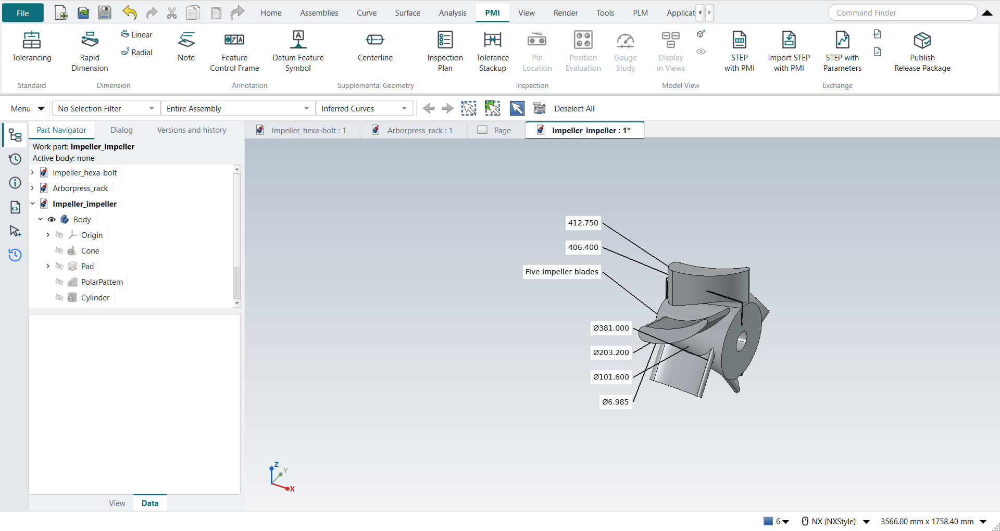
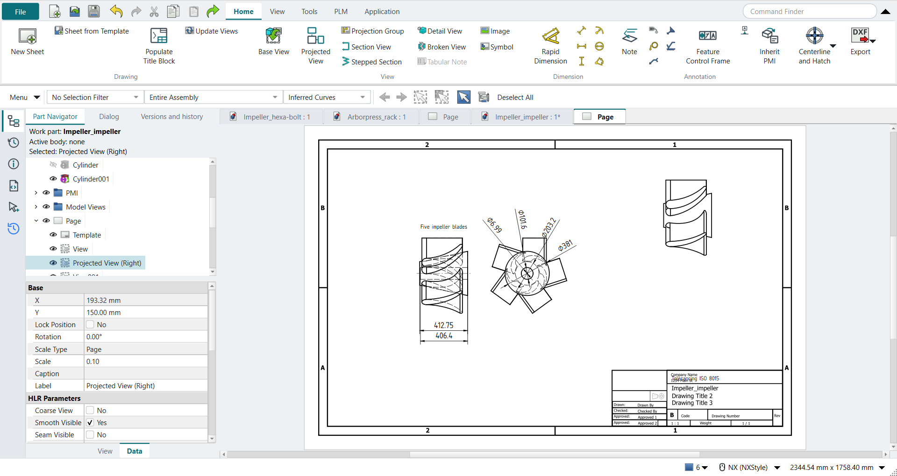

Tutorial BA: PMI on the Impeller
| Source |
Ming C. Leu, Wenjin Tao, Amir Ghazanfari and Krishna Kolan, NX 12 for Engineering Design (Missouri University of Science and Technology), section 5.5 (Product and Manufacturing Information). |
| You learn |
the PMI tab: Rapid and Linear, Radial, Centerline, Note; model views; Inherit PMI on a drawing |
| Part |
tutorial AU's impeller, |
| Sizes |
the book’s, in inches, typed in millimetres. |
Step by step
1. Dimensions along the axis
Open Impeller_impeller and click the PMI tab.
Select the impeller’s two end faces and click Rapid Dimension, then MB2: 16.25 in, the cone’s length.
Select the large end face and the bore’s floor and click Linear: 16 in, the bore’s depth.
2. Diameters
The book does not say which view the PMI goes into. The diameters are read down the axis, so double-click Right under Model Views to make it the work view. Then click Radial on each of these, with the Diameter method:
-
the large end’s circular edge, Ø15;
-
the small end’s circular edge, Ø8;
-
the bore, Ø4;
-
the pin hole, Ø0.275.
3. Centerline and note
Double-click Front under Model Views.
Select the bore and click Centerline (Supplemental Geometry): its axis appears, a little longer than the bore.
Select a blade, click Note, type Five impeller blades and press MB2.

Save the part.
4. The drawing
Press Ctrl+Shift+D and click New Sheet (B, 11 x 17, here at 1:10). Make a Base View looking at the front, a Projected View to its right (the view down the axis), and a Base View in the isometric direction. The front and right views show hidden lines. Set each view’s NX_InheritPMI to Aligned to Drawing (Entire Part), the option the book picks in the View Creation Wizard. Select each view and click Inherit PMI. The front view gets the two lengths, the note and the centerline. The right view gets the four diameters.

The replay
| # | In the book (NX) | In FreeCAD NX-Style | Result | Notes |
|---|---|---|---|---|
BA1 |
Open Impeller_impeller (tutorial AU’s part) |
File > Open (by script) |
same |
tutorial AU’s impeller: same solid as the reference: 0 mm³ differ, box within 5.9e-13 mm, 31 faces (31 in the reference) |
BA2 |
File > PMI (check mark on): the PMI tab |
the Modeling ribbon’s PMI tab |
differs |
tab 'PMI'. NX 12 turns the PMI application on from File; NX-Style’s PMI tab is always there |
BA3 |
Rapid: the impeller’s two end surfaces, the linear dimension 16.25 |
Face4, Face7 selected + ribbon 'PMI › Dimension > Rapid Dimension'; nothing typed; MB2 = OK |
same |
412.750: 16.2500 in, the end faces 16.2500 in apart (the book’s 16.25) |
BA4 |
Linear: the bore’s depth 16 |
Face4, Face31 selected + ribbon 'PMI › Dimension > Linear'; nothing typed; MB2 = OK |
same |
406.400: 16.0000 in from the large end to the bore’s floor (the book’s 16) |
BA5 |
The diameters are read down the axis: Right as the work view |
double-click 'Right' under Model Views in the Part Navigator |
differs |
the book does not say; a PMI goes into the work view, and a drawing view looking down the axis inherits those (Aligned to Drawing) |
BA6 |
Radial: Ø15, the large end |
Edge4 selected + ribbon 'PMI › Dimension > Radial'; Method Diameter; MB2 = OK |
differs |
Ø381.000 |
BA7 |
Radial: Ø8, the small end |
Edge11 selected + ribbon 'PMI › Dimension > Radial'; Method Diameter; MB2 = OK |
differs |
Ø203.200 |
BA8 |
Radial: Ø4, the bore |
Face25 selected + ribbon 'PMI › Dimension > Radial'; Method Diameter; MB2 = OK |
differs |
Ø101.600 |
BA9 |
Radial: Ø0.275, the pin hole |
Face26 selected + ribbon 'PMI › Dimension > Radial'; Method Diameter; MB2 = OK |
differs |
Ø6.985 |
BA10 |
The centerline and the note in Front |
double-click 'Front' under Model Views |
differs |
the view the sizes along the axis are in |
BA11 |
Supplemental Geometry > Centerline: the inner surface of the impeller |
Face25 selected + ribbon 'PMI › Supplemental Geometry > Centerline'; the bore’s face; MB2 = OK |
same |
from x = -3.2800 to 15.2800 in on the XC axis: the bore (-2 to 14 in) and 8% past each end |
BA12 |
Note: 'Five impeller blades', its leader on a blade |
Face29 selected + ribbon 'PMI › Annotation > Note'; the text typed; MB2 = OK |
same |
'Five impeller blades', its leader on Face29 (a blade; 0.0e+00 mm from it) |
BA13 |
The trimetric view with the PMI; save the file |
Show All PMI, Trimetric; file name given once by script (the system file dialog is not driven); a change, then the Ctrl+S key |
same |
Impeller_impeller.FCStd rewritten by Ctrl+S: the file holds the change and the part is unmodified afterwards (modified before the key: True); FreeCAD format, not .prt |
BA14 |
File > Drafting |
Ctrl+Shift+D |
same |
TechDrawWorkbench |
BA15 |
Drawing sheet: as in 5.2 (B 11 x 17), here at 1:10 |
ribbon 'Home › Drawing > New Sheet'; the sheet’s Template, Scale and Projection |
differs |
ANSIB_Landscape.svg: 431.8 x 279.4 mm (the book’s 17 x 11 in), scale 0.1, Third angle. NX asks for size, scale and projection in one Sheet dialog; FreeCAD’s New Sheet uses the default template and these are the sheet’s properties |
BA16 |
Drawing views (View Creation Wizard): Front, Right and Isometric; Inherit PMI, Aligned to Drawing (Entire Part), Inherit PMI onto Drawing |
body selected + ribbon 'Home › View > Base View' (Front, then Isometric), 'Home › View > Projected View' Right; the views' NX_InheritPMI |
differs |
Right looks down the axis (1.0, 0.0, 0.0), with hidden lines; inherit modes ['Aligned to Drawing (Entire Part)', 'Aligned to Drawing (Entire Part)']. NX’s wizard asks for the PMI option; here it is each view’s NX_InheritPMI property (NX: Settings > Common > PMI) |
BA17 |
Inherit PMI onto Drawing: the PMI and the note on the views |
each view selected + ribbon 'Inherit PMI' |
differs |
front view: lengths [16.0, 16.25] in (the PMI [16.0, 16.25]), the note [['Five impeller blades']], the centerline at y = 151.94158625194856 (the axis: 151.9416); right view: diameters [0.275, 4.0, 8.0, 15.0] in (the PMI [0.275, 4.0, 8.0, 15.0]). Skipped: front [], right []. NX inherits in the wizard; here the Inherit PMI button does it per view |
| Result | Means |
|---|---|
same |
The book’s NX steps work as written. |
differs |
It works, but the FreeCAD way is different; the notes say how. |
limit |
The book’s way fails in FreeCAD itself; a workaround follows in the next steps. |
missing |
FreeCAD has no such function; a stand-in follows. |
skipped |
Not replayed; the notes give the reason. |
FAILED |
Did not work. |
Each PMI is compared with the impeller the Part API builds from the book’s sizes. The lengths must be the distances between its end faces and the bore’s floor, the diameters its circles and cylinders. The centerline must lie on the X axis and run from the bore’s floor to its mouth, plus the overrun. The note’s leader must end on the blade. On the drawing, each inherited dimension must carry the PMI’s value, and the centerline must lie on the axis as the front view shows it.
What differs from NX
-
NX 12 switches the PMI application on from File. NX-Style’s PMI tab is always there.
-
NX places a PMI with a click in the graphics window. Here it is placed beside its face, in the work view’s plane.
-
NX’s Inherit PMI option is in the View Creation Wizard. Here it is each view’s NX_InheritPMI property, and the Inherit PMI button brings the PMI onto the view.
-
The book’s axial view shows the Ø8 end as a dashed hidden circle. Here, too, the view draws hidden lines, and the dimension goes on the dashed circle.
-
A note inherited onto the drawing goes above the view, without its leader, as in the book’s figure.
-
The book’s drawing view of the PMI is isometric. Inherit PMI places dimensions on edges seen square, so here the PMI goes on the front view and the view down the axis. The isometric view shows the part only.